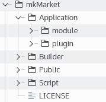

Comment soumettre un plugin au Market
Introduction
C'est très simple, après avoir suivi les tutos Comment créer un pluginPrésentation du SDK
Comme pour tout développement au sein d'un projet existants, il faut respecter certaines règles pour incorporer du code tiers, le builder du mkframework n'échappe pas à cette règle et vous propose des outis pour créer votre première extensionPour être le plus transparent, le market et un projet github à part entière, ceci permet une transparence:
- des mises à jour des extension
- des nouvelles extension ajoutées/proposées par des tiers
Installation des outils (SDK)
On utilise ici github pour stoquer à la fois le market et les outilsIl vous faut donc l'outil git ou simplement télécharge le zip (comme le permet github)
Nous verrons ici le premier cas, qui permettra par la suite de proposer votre extension au market.
Créer un répertoire mkMarket sur votre ordinateur, puis cloner le dépot git:
git clone https://github.com/imikado/mkmarket .
L'installation est terminée.
Présentation du SDK
Une fois le clonage effectuée (ou l'achive zip décompressée), vous avez l'arborescence suivante:
Nous allons dans ce tutoriel nous interesser uniquement à la première grappe de répertoires , laissez de coté Builder, Public et Script ;)
Nous avons donc un répertoire Application qui contient une sous arborescence module et plugin qui nous interesse.
Dans ce répertoire, on peut voir une liste de fichier plugin avec deux extensions: .php (le plugin) et .ini (le fichier description)
Préparation de notre plugin pour le market
C'est ici très simple, reprenons notre exemple de plugin_calculette créé dans le précédent tutoriel.Il faut "juste" créé un fichier de même nom avec l'extension .ini qui permettra au market de présenter celui-ci ainsi que sa version et son auteur.
Donc ici, créer votre fichier php du plugin
plugin_calculette.php
Et ajouter un nouveau fichier .ini avec le même nom suffixé de .ini
title.fr="Plugin calculette"
title.en="Calculette plugin"
version=1.0.0
author=mkframework
title.fr/en : permet d'indiquer le nom du plugin
version : la version du plugin
author: votre pseudo, ou votre compte twitter